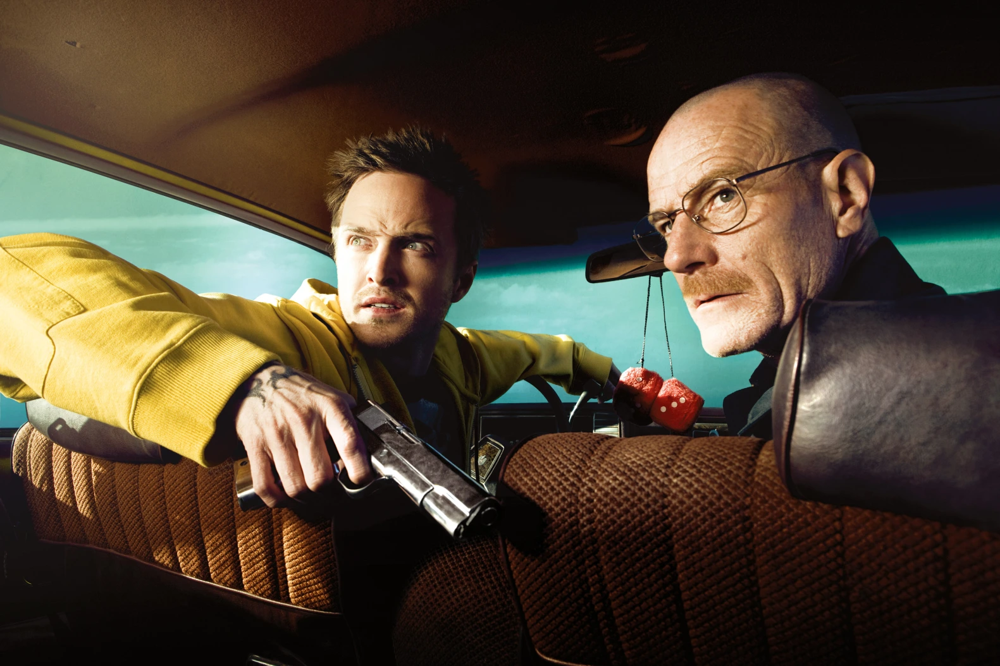
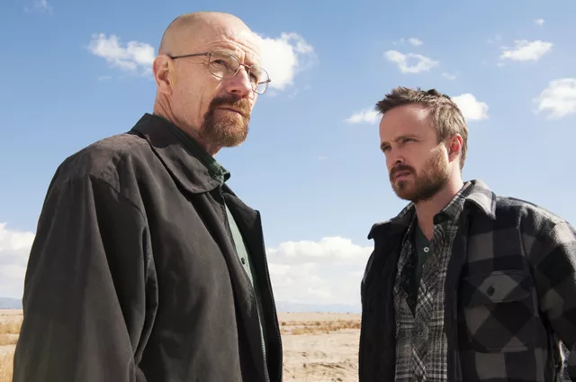
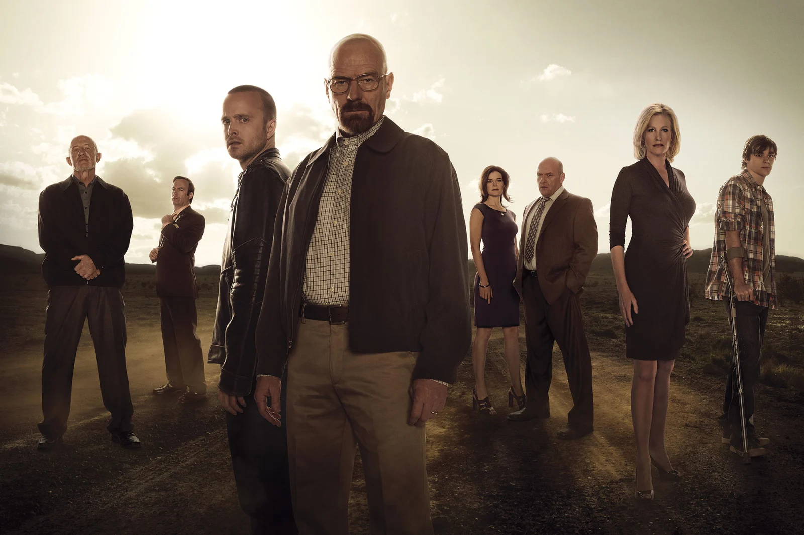

Breaking Bad is an American crime drama
television series created and produced by Vince Gilligan. Set
and filmed in Albuquerque, New Mexico, the series follows Walter
White (Bryan Cranston), an underpaid, overqualified, and dispirited
high-school chemistry teacher who is struggling with a recent diagnosis
of stage-three lung cancer. White turns to a life of crime and partners
with a former student, Jesse Pinkman (Aaron Paul), to produce and
distribute methamphetamine to secure his family's financial future
before he dies, while navigating the dangers of the criminal underworld.
The show aired on AMC from January 20, 2008, to September 29, 2013,
consisting of five seasons for a total of 62 episodes.
Among the show's co-stars are Anna Gunn and RJ Mitte as Walter's wife
Skyler and son Walter Jr., and Betsy Brandt and Dean Norris as Skyler's
sister Marie Schrader and her husband Hank, a DEA agent. Others include
Bob Odenkirk as Walter's and Jesse's lawyer Saul Goodman, Jonathan Banks
as private investigator and fixer Mike Ehrmantraut, and Giancarlo Esposito
as drug kingpin Gus Fring. The final season introduces Jesse Plemons as
the criminally ambitious Todd Alquist, and Laura Fraser as Lydia Rodarte-Quayle,
a cunning business executive secretly managing Walter's global meth sales for
her company.
Cast:
  